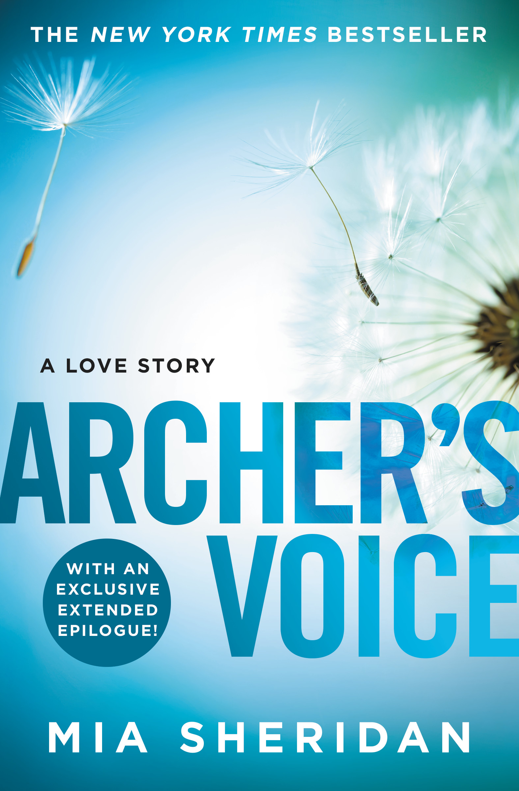
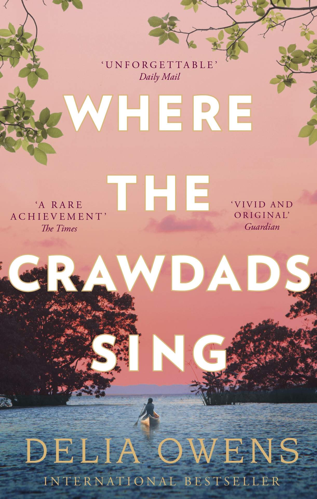

Emma's Book Reviews
The Only Opinion That Matters
The Maze Runner

James Dashner
The Maze Runner is about a 16 year old boy named Thomas who wakes up in an artificially made maze with no memories.
Crescent City

Sarah J Mass
Crescent City follows the story of a half-human, half-fae named Bryce Quinlan who attempts to avenge her friends' murders in her city.
Cinder

Merissa Myer
Cinder follows a cyborg named Cinder who is trying to balance her life as a mechanic and her hateful stepmother.
Scythe Trilogy

Neal Shusterman
Scythe is set in 2042 where humans have become immortal and created an order of scythes called the Scythedom that kills humans to control population.
Better Than The Movies

Lynn Painter
Better Than The Movies is about Liz Buxbaum, a fabulously eccentric high schooler coping with the loss of her mother and the messy reality of romance.
The Chronicles of Narnia

C.S Lewis
The Chronicles of Narnia is about a group of siblings and their adventures in the world of Narnia. It deals with the themes of good and evil.
Harry Potter Series

J.K Rowling
Harry Potter follows an orphan boy named Harry Potter and his adventures in the wizarding world.
Game of Thrones Series

George R.R Martin
Game of Thrones is about several noble houses and their complicated multi party war for the Iron Throne.
Babel

R.F Kuang
Babel is set in an alternative-reality 1830s England where Britain's global economic and colonial supremacy are fueled by the use of magical silver bars.
The Night Circus
Erin Morgenstern
The Night Circus is about a duel between two young magicians, Celia and Marco, who have trained since childhood expressly for this purpose by their mercurial instructors.
The Book Thief
Markus Zusak
The Book Thief is about a girl called Liesel who's growing up in Germany in World War II and she steals books, learns to read, and finds comfort in the books.
Archer's Voice

Mia Sheridan
Archer's Voice is the story of a woman chained to the memory of one horrifying night and the man whose love is the key to her freedom.
The Invisible Life of Addie Larue

V.E. Schwab
The Invisible Life of Addie Larue is about a French girl in 1914 who has made a deal with the Dark that makes her immortal but everyone she meets forgets her.
Where the Crawdads Sing

Delia Owens
Where the Crawdads Sing follows an abandoned yet defiant girl named Kya who has raised herself in North Carolina marshlands but when the town's hotshot is dead she is the main suspect and tried for murder.
Eleanor & Park
Rainbow Rowell
Eleanor & Park is set over the course of a school year in 1986, this is a story of two smart cross lovers misfits-smart enough to know first love never lasts.
Turtles All the Way Down
John Green
Turtles All the Way Down is about 16-year-old Aza Holmes, an American high school student with ADHD and anxiety and her search for a fugitive billionaire who happens to be her neighbour's dad.